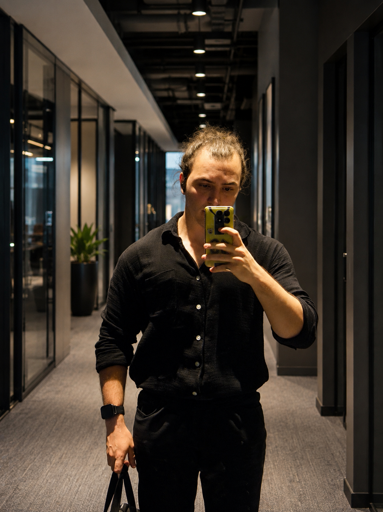

- Node.js & Express★★★★★
- REST API & JWT★★★★★
- Go★★★★★
- Microservices★★★★★
- .NET & C#★★★★★
- gRPC & Protobuf★★★★★
- PostgreSQL & Redis★★★★★
- Docker & RabbitMQ★★★★★
Bilgisayar Mühendisi / Backend & Yapay Zekâ
Merhaba, ben
Ali Çağlar.
Backend ve yapay zekâ üzerine çalışan bir bilgisayar mühendisiyim. Bir yandan yeni bir ekipte değer üretmek, diğer yandan kendi ürünlerimi büyütmek istiyorum.
İstanbul, Türkiye 2026

02 / Deneyim
Farklı araçlar.
Tek bir amaç.
Yazılıma test, optimizasyon ve sistem gözlemlenebilirliği alanında başladım. Son iki yılda Node.js, Go ve Python kullanarak üretime dönük yazılımlar geliştirdim; zamanla odağım backend sistemlerinden yapay zekâ destekli ürünlere genişledi.
Bugün kendimi tek bir alan veya teknolojiyle sınırlamıyorum. Yeterince anlayabildiğim gerçek problemlerde, doğru araçları bir araya getirerek yenilikçi ve sürdürülebilir çözümler üretmeye çalışıyorum.
3yıldır Node.js,
Go ve Python
Go ve Python
2yıl profesyonel
ürün geliştirme
ürün geliştirme
3ana odak:
Backend, AI, Sistemler
Backend, AI, Sistemler
Uzmanlık alanları
Detaylar için üzerine gel veya dokun- LLM Integration★★★★★
- Agentic Frameworks★★★★★
- Python★★★★★
- Tool Use & MCP★★★★★
- LangGraph & LangChain★★★★★
- RAG & Vector Search★★★★★
- Prometheus & Grafana★★★★★
- Loki, Tempo & OTel★★★★★
- AWS Serverless★★★★★
- Kubernetes & Istio★★★★★
- Terraform & AWS★★★★★
- React & TypeScript★★★★★
- Flutter & Electron★★★★★
- Java & Kotlin★★★★★
02 / Seçili çalışmalar
Üzerinde çalıştığım
ürünler.
Bir projeye teknoloji seçerek değil, çözmeye değer bir sorun bularak başlıyorum.
WatchTower
Kapalı şirket ağlarında olağan dışı kullanıcı ve servis davranışlarını; kararları yapay zekâya bırakmadan, açıklanabilir kanıtlarla görünür hâle getiriyor.
- Davranış analizi
- Açıklanabilir uyarılar
- Local-first
Sentinel
Şirketlerin gözlemlenebilirlik verilerini kendi altyapısında tutarken sistemi öğrenen ve sorunları oluşmadan önce anlamlandıran yerel bir yardımcı.
- Kişiselleştirilmiş eşikler
- Self-hosted
- Olay analizi
Immense
Antrenman, beslenme ve koçluk süreçlerini ayrı uygulamalardan çıkarıp sporcu ile koçu aynı ürün ekosisteminde buluşturuyor.
- 17 mikroservis
- Koç & sporcu
- Mobil uygulama
01 / 03
Sürükle veya okları kullan